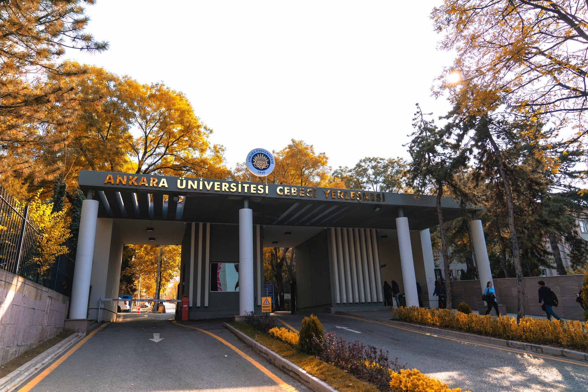

Dalam Cerita — Nov 3, 2020

Photo by Ankara University on Unsplash
Bismillah.
Ini hari kedua sejak saya pulang ke rumah dan memulai keseharian saya di masa pandemi di rumah. DIisi dengan mengurus transaksi desain dan membereskan bugs di beberapa project.
Selain itu tidak banyak yang saya lakukan, terkadang hanya membaca referensi untuk melanjutkan penelitian, melakukan pekerjaan-pekerjaan rumah kecil seperti pada umumnya dan memulai berolahraga (jogging). Namun, saya akui belum ada hal yang membuat saya kembali bersemangat dalam bekerja dan berkuliah.
Ketika sedang kehilangan semangat seperti sekarang, agak merepotkan menurut saya. Dulu saya bisa dengan mudah keluar kamar dan meet-up dengan teman-teman untuk sekedar makan bersama atau sharing hal-hal acak yang bisa mengembalikan semangat, namun dengan keterbatasan sekarang tentu hal itu tidak bisa saya lakukan.
Karena itu, saya menulis ini dengan harapan agar bisa menghilangkan jenuh, dan ada satu hal lagi (kebiasaan lama) yang saya coba lakukan; stalking orang-orang di luar sana yang menurut saya hebat melalui internet.
Biasanya saya mendapat informasi tentang mereka secara acak entah dari GitHub, Twtter, atau berselancar bebas di internet. Dan ada beberapa hal yang membuat saya suka melakukan itu dan pelajaran yang bisa saya ambil dari orang-orang tersebut (dalam bidang informatika) karena umumnya mereka juga orang biasa seperti saya (bukan anak konglomerat yang sejak kecil hidup di US/Europe hehe) dan bukan orang yang terlahir super jenius.
Pelajaran yang bisa diambil:
Saya sangat setuju (100% setuju) dengan pernyataan mas Hilman (Sekolah Koding) dalam bukunya Hadiah Untuk Programmer:
Programmer (Kamu) punya keuntungan yang luar biasa dibanding orang lain, untuk berkarya orang lain membutuhkan banyak hal, butuh alat, butuh modal besar dan lain-lain. Kamu hanya perlu menyalakan komputer dan mulai menulis programnya.
Dulu saya tidak suka dengan coding, dan terkadang menyesali keputusan saya untuk masuk ke Ilmu Komputer (informatika) bahkan hingga di semester V. Alasan utamanya yaitu karena di bidang ini perubahan terjadi begitu cepat, apa yang saya pelajari satu tahun yang lalu sudah tidak relevan lagi dengan tren teknologi di industri sekarang.
Lalu ketika menginjak semester VIII dan mulai mendalami coding dengan sungguh-sungguh (sadar bahwa sudah mau lulus dan belum punya skill yang cukup) saya baru sadar tentang nasihat mas Hilman di atas.
Ternyata di bidang ini (spesifiknya di web development) satu-satunya tembok penghalang dari keberhasilan untuk menjadi developer hebat hanyalah diri sendiri. Tidak ada batasan memerlukan fasilitas kelas top untuk memulai belajar, tidak perlu komputer ekstra cepat untuk memulai berkarya. Yang dibutuhkan hanyalah laptop, jaringan internet, dan kemauan plus kesadaran diri untuk belajar.
Saya terkesan dengan orang-orang yang sudah sadar tentang hal ini di umur yang lebih muda. Ada remaja belasan tahun yang baru belajar kurang dari dua tahun tetapi sudah memiliki skill dan portofolio GitHub yang keren dan exceptional.
Terkadang saya berkontemplasi; jika saya sadar hal ini dari sejak awal kuliah tentu akan sangat berbeda ceritanya. Memang jika saya hitung secara kasar, dari delapan semester yang sudah saya lalui, hanya di semester VIII saja saya benar-benar ‘belajar’ coding dengan serius. Sebagai mahasiswa Ilmu Komputer memang sejak semester I sudah belajar coding, hanya saja untuk menjadi developer yang ‘siap industri’ tentu tidak cukup hanya dari sekedar belajar di kelas.
Begitulah manusia, selalu menyesali kesempatan yang sudah terlewatkan. Namun saya tetap bersyukur meski sangat terlambat, dan alhamdulillah saya akhirnya sadar meski di akhir masa perkuliahan.
Saya juga sadar bahwa ternyata sisi positif dari perkembangan teknologi yang begitu cepat adalah membuat selalu ada hal baru yang bisa dipelajari. Tidak harus selalu menggunakan tools/teknik itu-itu saja, ketika sudah bosan bisa mencoba dengan cara dan tools yang baru.
Pengalaman itu saya rasakan ketika mulai agak bosan dengan desain grafis, sejak mengenal ini di SMA saya sudah mencoba PhotoShop, CorelDraw, dan AI. Kemudian dalam dua tahun ini hanya berkutat dengan AI dan dengan job itu-itu saja, cukup menjenuhkan juga rasanya hehe.
Kata ambisi/ambisius belakangan memang digunakan untuk mendeskripsikan orang dengan konotasi negatif. Menurut saya ini kurang tepat, selama berkuliah saya sudah mengalami masa dimana saya begitu ambisius dengan suatu hal dan sebaliknya membiarkan hidup berlajan begitu saja apa adanya tanpa tujuan.
Kedua sisi tersebut memang berbeda curam. Sebenarnya memilih di tengah-tengah itu cukup bagus, tetapi menurut saya menjadi ambisius dengan porsi yang cukup jauh lebih bagus daripada berada di tengah atau di sisi sebaliknya (hidup dengan mengikuti arus).
Obsessed is a word that the lazy use to describe the dedicated.
Saya punya banyak senior yang jika saya perhatikan selalu memiliki ambisi tentang suatu hal. Memang semakin tua kita cenderung untuk semakin realistis, namun ambisi dalam hal yang terdefinisi dan dapat diwujudkan itu penting.
Tadi pagi saya ‘menemukan’ mahasiswa doktoral yang lebih tua beberapa tahun dari saya yang memiliki publikasi penelitian yang exceptional. Tidak banyak yang saya temukan di GitHub-nya tetapi di profil Scholar-nya luar biasa. Sepertinya ia fokus ke dunia akademisi.
Orang-orang itu memiliki tujuan yang jelas dengan ambisi yang konsisten. Tentu di balik layar mereka memiliki masa sulit yang tidak terpublikasi. Namun jika mereka tidak memiliki konsistensi, saya ragu mereka bisa sampai sejauh itu sekarang.
Ada banyak hal yang bisa saya ‘dapat’ dari stalking jejak mereka di internet. Untuk sekarang saya ceritakan dua itu dulu, mengingat tulisan ini sudah cukup panjang. Di akhir ini, saya rasa saya mendapat cukup tambahan ‘energi’ untuk memulai hari yang lebih produktif di hari ini hehe.
Dibuat dengan ❤ dan di Kendal.